Edmund Frank Horne 1919 - 1997
[ Home ] | [ Calendar ] | [ Surnames Index ] | [ Census Index ] | [ Family History ]A market gardener and road sweeper and the 5th of 7 children of Isaac Horne (a hay trusser & thatcher heavy worker market gardener) and May Spratt, Edmund Horne, the father of Nigel Horne, was born in Minster, Thanet, Kent, England on Sep 3, 19191,2,3,4,5,6,7 and married Joyce Cowell (with whom he had 4 children: David James, Diane Joyce, Nigel John and David James, along with 1 surviving child) at St Mary the Virgin Church, Minster, Thanet, Kent, England on Nov 1, 19528.
During his life, he was living at Pansy Cottage, Way, Minster in Thanet on Jun 19, 19211; at Way Cottages, Minster in Thanet on Aug 28, 1931 and on Sep 29, 19392; at 22 Molineux Road, Minster in Thanet in 195510 and in 1959; at 19 Kingston Avenue, Garlinge, Kent in 19659 and in 197112; and at 33 Fulham Avenue, Garlinge, Kent in 197411. He served in the army from 1939 to 1945 in Dunkirk, Kent, England (the Buffs (East Kent Regiment)). Edmundappeared in a newspaper on 13 Oct 1998 (https://www.findmypast.com/image-viewer?issue=BL/0002514/19981013&page=0023&article=023&stringtohighlight=edmund%20frank%20horne)in a newspaper on 21 Oct 1997 (https://www.findmypast.com/image-viewer?issue=BL/0002514/19971021&page=0019&article=019&stringtohighlight=edmund%20frank%20horne)in a newspaper on 12 Nov 1997 (https://www.findmypast.com/image-viewer?issue=BL%2F0003797%2F19971112&page=40&article=040&stringtohighlight=edmund+frank+horne).
He died on Oct 12, 1997 at Wisdom Hospice, High Bank, Rochester, Kent5,6,7 (cancer) and was buried on Minster Cemetery, Tothill Street, Minster in Thanet on Oct 20, 1997 following his funeral at St Mary the Virgin Church, Minster, Thanet, Kent, England6,7.
Parents
- Isaac was born on Apr 10, 1885
- May was born on Jan 1, 1888
Children
- David James was born on Apr 29, 1958
- Diane Joyce was born on Apr 29, 1958
Citations
- 1921 Census Of England & Wales - Findmypast (was age 1 and the son of the head of the household)
- 1939 Register - Findmypast (was the son of the head of the household)
- England & Wales deaths 1837-2007 - Findmypast
- England & Wales, Birth Index: 1916-2005 Online publication - Provo, UT, USA: The Generations Network, Inc., 2008.Original data - General Register Office. England and Wales Civil Registration Indexes. London, England: General Register Office. © Crown copyright. Published by permission of the Cont
- England & Wales, Death Index: 1984-2005 Online publication - Provo, UT, USA: The Generations Network, Inc., 2007.Original data - General Register Office. England and Wales Civil Registration Indexes. London, England: General Register Office. © Crown copyright. Published by permission of the Cont
- UK and Ireland, Find A Grave Index, 1300s-Current Ancestry.com Operations, Inc.
- Web: International, Find A Grave Index Ancestry.com Operations, Inc.
- England & Wales Marriages 1837-2005 - Findmypast
- 1965 Kelly's Thanet Directory
- 1955 Kelly's Thanet Directory
- 1974 Kelly's Thanet Directory
- 1971 Kelly's Thanet Directory
Media
Mum and Dad Marriage

Edmund Frank Horne
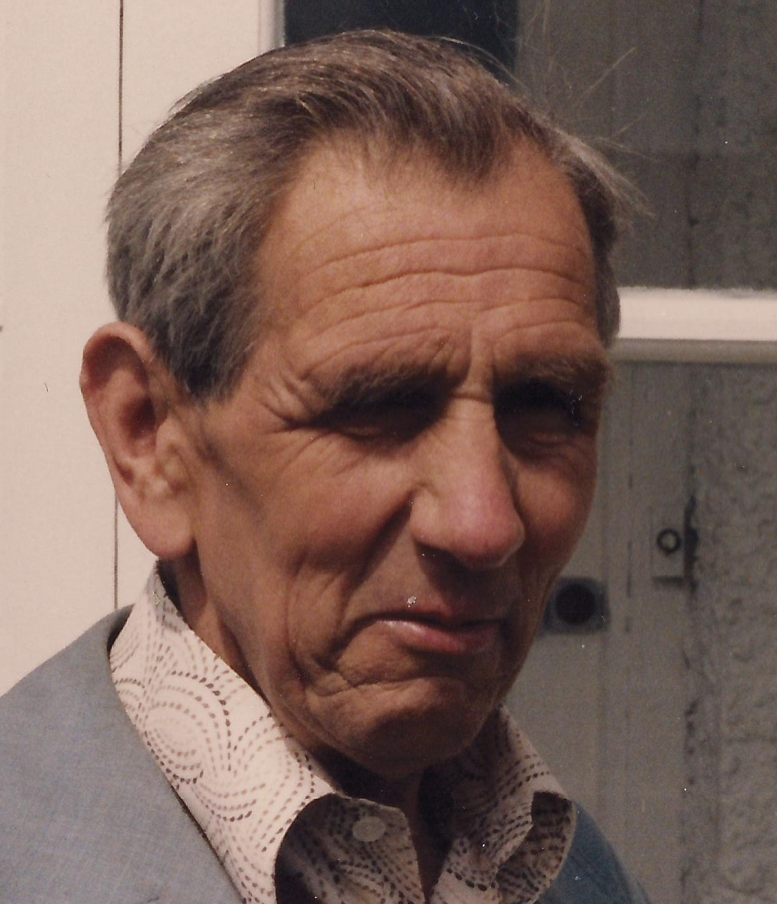
Edmund Horne - Headstone
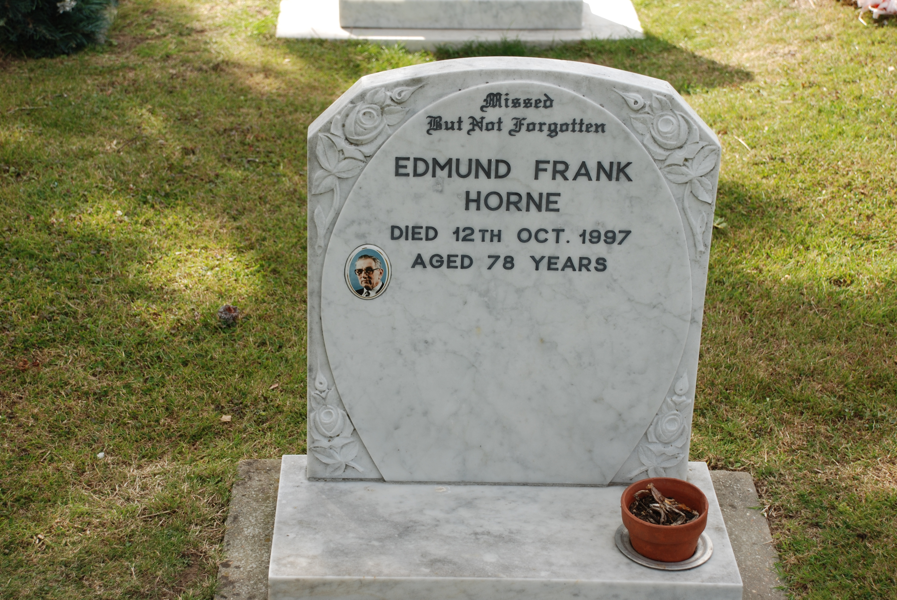
Edmund Frank Horne 3
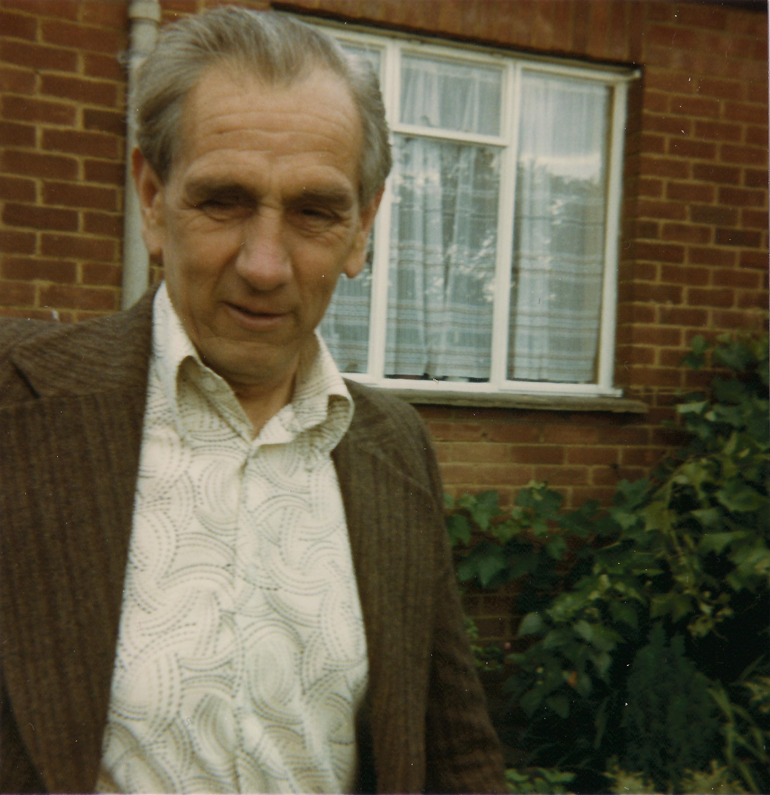
Edmund Frank Horne 2
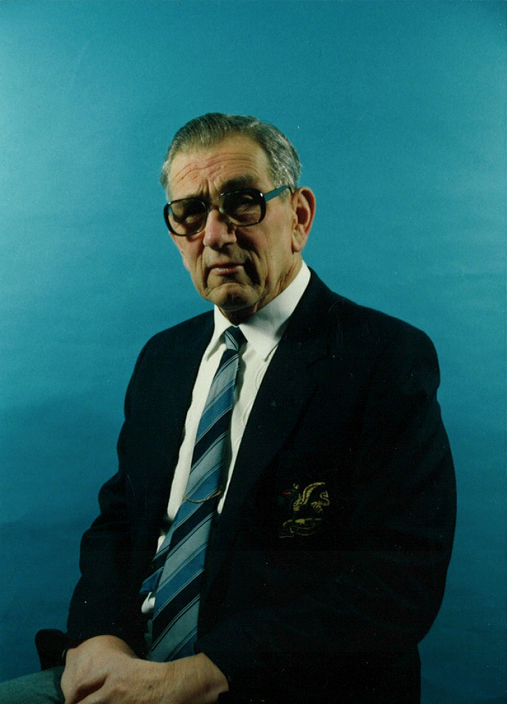
Edmund Horne
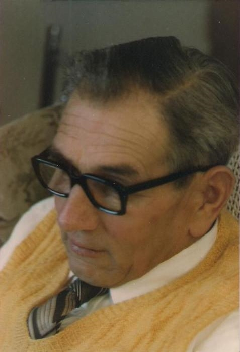
Edmund Horne - 4
Edmund Frank Horne - 7
Edmund Horne - 9
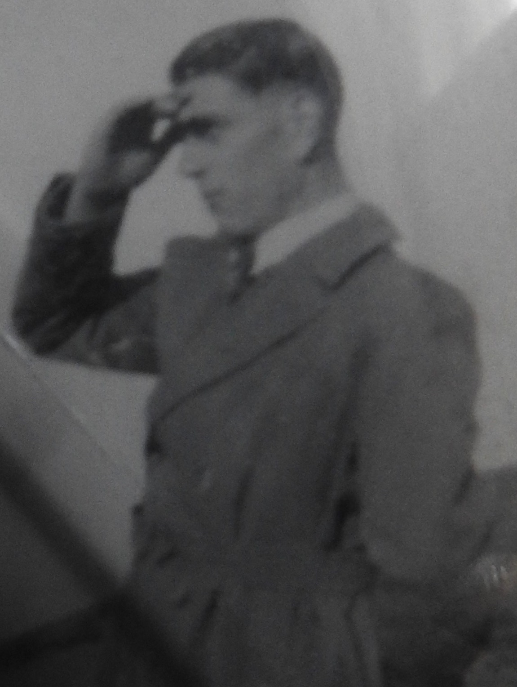
Edmund Frank Horne - 10
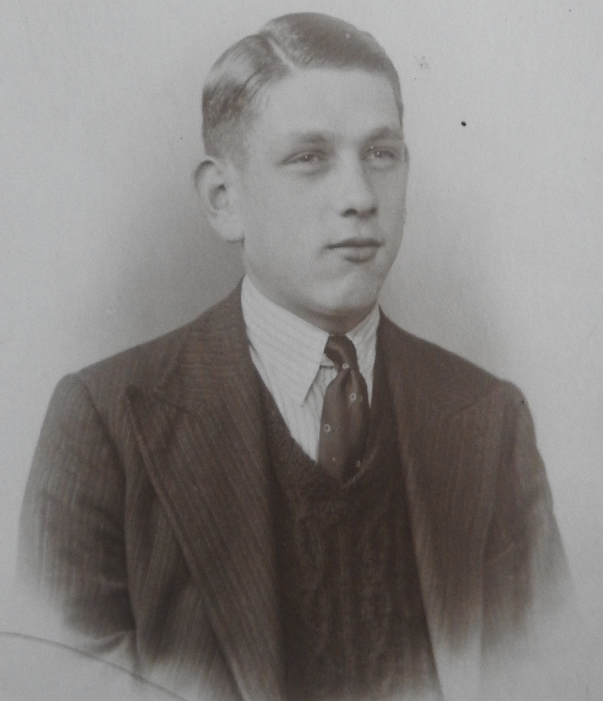
Edmund Frank Horne - 11
East Kent Times and Mail - 8 Nov 1952
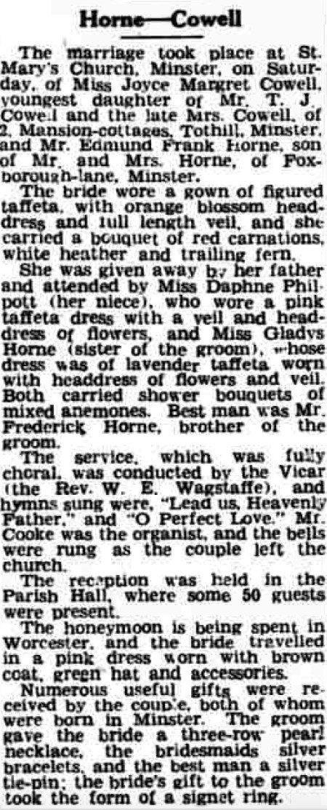
East Kent Times and Mail - 8 Nov 1952
1965 Kelly's Thanet Directory

1955 Kelly's Thanet Directory

Edmund Frank Horne - 12
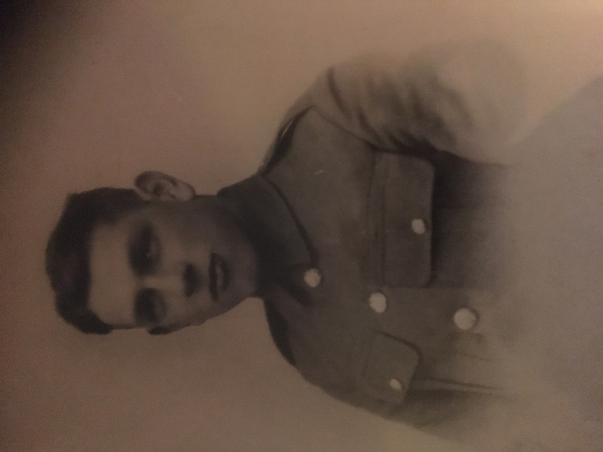
Kentish Express - 28 Aug 1931
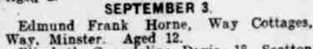
1971 Kelly's Thanet Directory

Edmund Frank Horne - 13
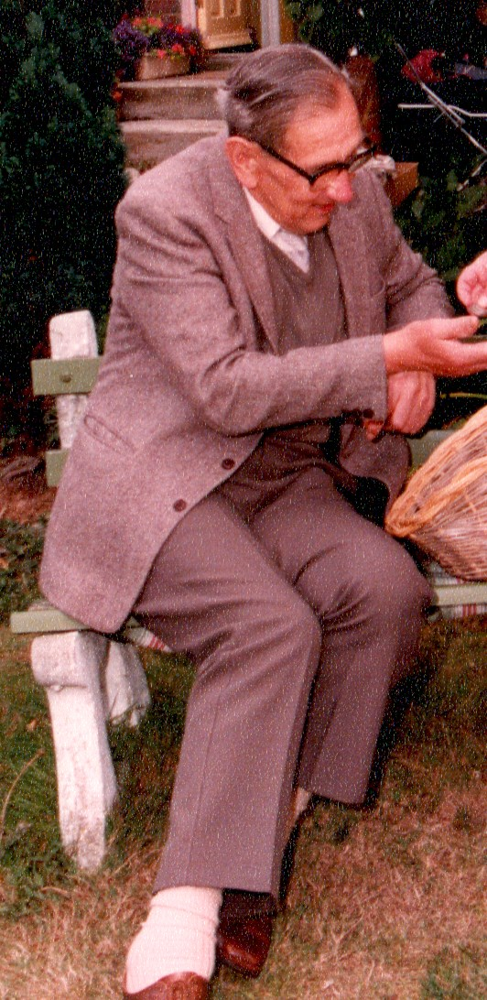
England & Wales marriages 1837-2008 - BMD/M/1952/4/AZ/000236/114
England & Wales marriages 1837-2008 - BMD/M/1952/4/AZ/000551/085
England & Wales births 1837-2006 - BMD/B/1919/4/AZ/000753/019
England & Wales deaths 1837-2007 - BMD/D/1997/10/81989931
1939 Register Transcription - TNA-R39-1820-1820H-015-06
1939 Register Transcription - TNA-R39-1820-1820H-015-08
England Billion Graves cemetery index - US/BMD/BILLION/009051279
1939 Register Transcription - TNA-R39-1820-1820H-015-09
1939 Register Transcription - TNA-R39-1820-1820H-015-07
1921 Census Of England & Wales - GBC/1921/RG15/04430/0061/05
Family Tree
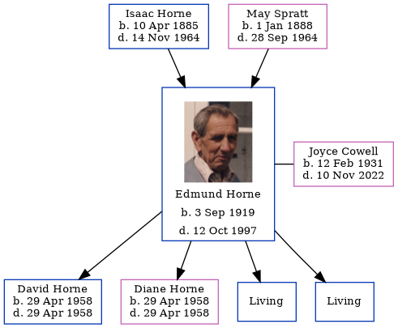Generated by ged2site. Last updated on Jun 11, 2024